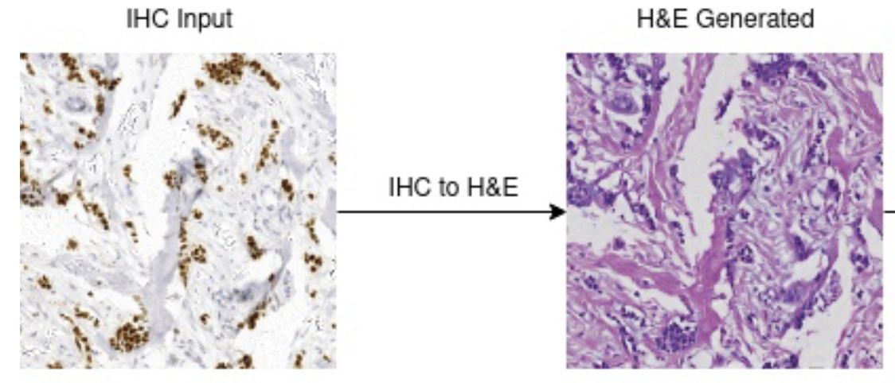
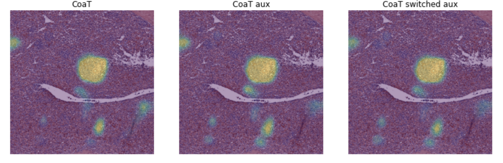
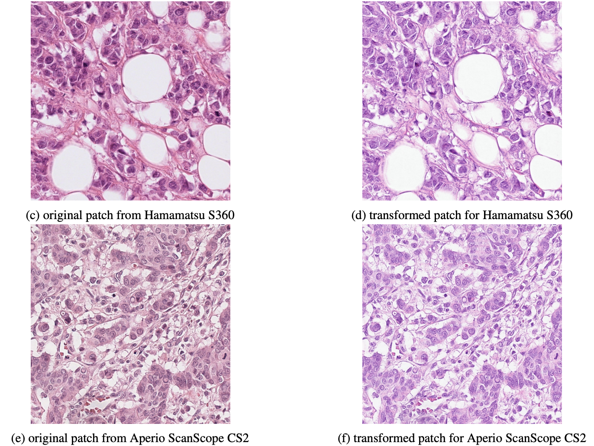
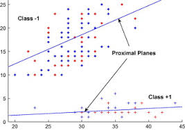

|
Research
I am interested in Multimodal vision language models, LLMs, Contrastive learning, Foundational models etc.
Problems like distribution matching, sparse models for dense predictions, realtime machine vison, efficient 3D reconstruction excites me.
|
|

|
Generating Digital Stains Via Neural Schrodinger Bridge in Pathology Images
Mustaffa Hussain*,
Prateek Sanghi,
and Vikas Ramachandra
Link
Having an IHC and H&E of a tissue helps in improving the cancer diagnostic procedure to a great extent.
Having both types of stains comes with labor, space, monetary and accessablity etc issues.
Merging the direct translations presents its own set of challenges at WSI level.
We present an UNSB approach for unpaired image to image translation of IHC to H&E at WSI level for virtual staining.
Tags: Generative Image , Pytorch , Large Image Stitching
|
|

|
Switched auxiliary loss for robust training of transformer models for histopathological image segmentation
Mustaffa Hussain*,
Saharsh Barve*,
and Mohnish Pakanati
Link
Functional tissue Units (FTUs) are cell population neighborhoods local to a particular organ performing its main function.
We have developed a model to segment multi-organ FTUs across 5 organs namely: the kidney, large intestine, lung, prostate and spleen.
We propose adding shifted auxiliary loss for optimal and robust training and present comprehensive results supporting our claim.
Tags: Image Segmentation , Auxiliary loss , Medical Image Analysis
|
|

|
Robust Multi-Domain Mitosis Detection
Mustaffa Hussain*,
Ritesh Gangnani,
and Sasidhar kadiyala
Link
Domain variability is a common bottle neck in developing generalisable algorithms for various
medical applications. We propose to learn a target representative feature space through
unpaired image to image translation (CycleGAN) and use translation to mitosis detection with candidate proposal and
classification. This work presents a simple yet effective multi-step mitotic figure detection.
Tags: Object Detection , Domain Generalisation , RGB-HSV-LAB colour spaces
|
|

|
Robust Multi-task Least Squares Twin Support Vector Machines for Classification
Reshma Rastogi*,
and Mustaffa Hussain
Link
Multi-task learning performs better than the classical single task learning by learning from the training signals inherent in all the tasks.
Inspired by multi-task twin support vector machine, we propose a novel robust multi-task least squares twin support vector machine for classification.
Tags: Twin SVM , Kernal Space , Hinge loss
|
|
Blogs
I am blown by the pace at which AI is progressing.
I started a community based tech blog space The CyPhy.
It is a group of curious minds trying to understand and explain data better.
Here are few articles in NLP, Vision and ML engineering domain written/moderated by me. Please visit The CyPhy for full list of articles.
|
|
{kind=link}